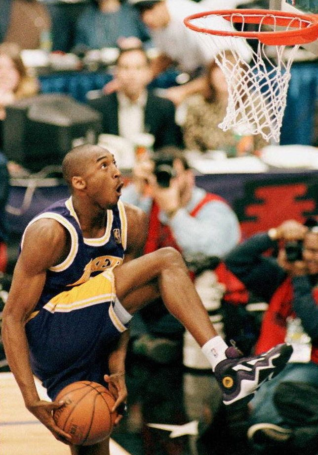
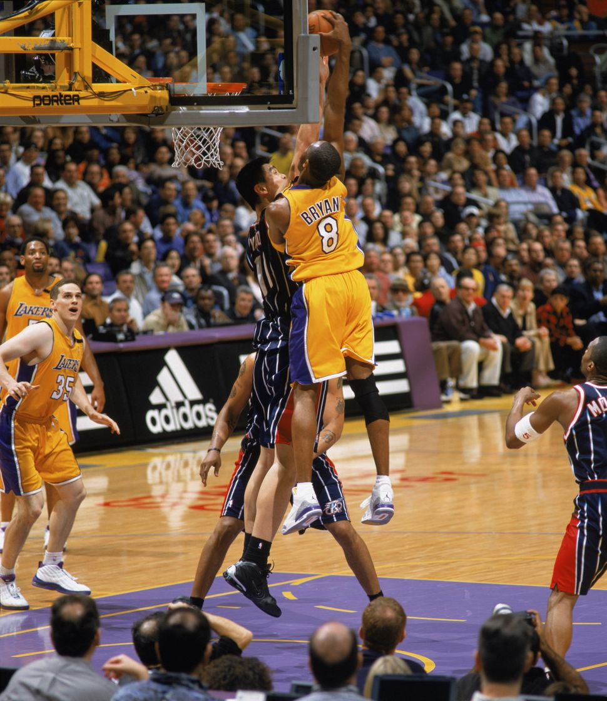
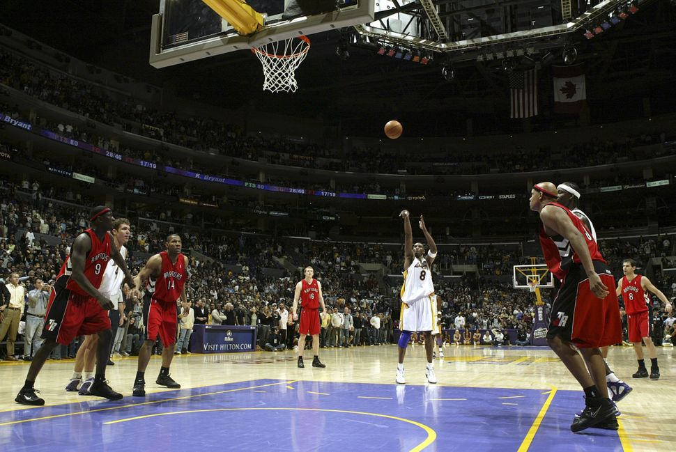
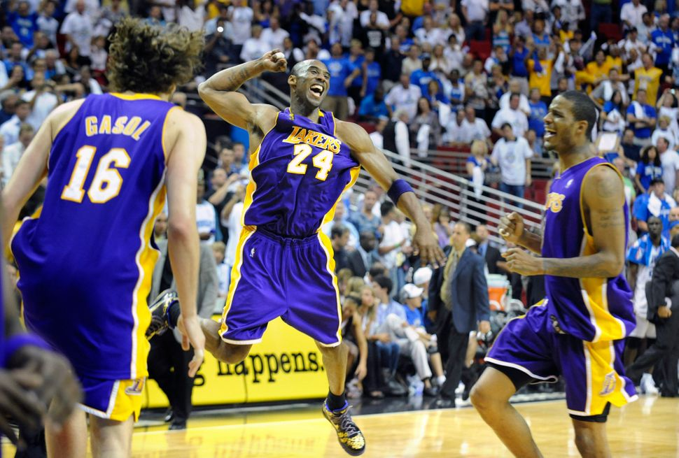
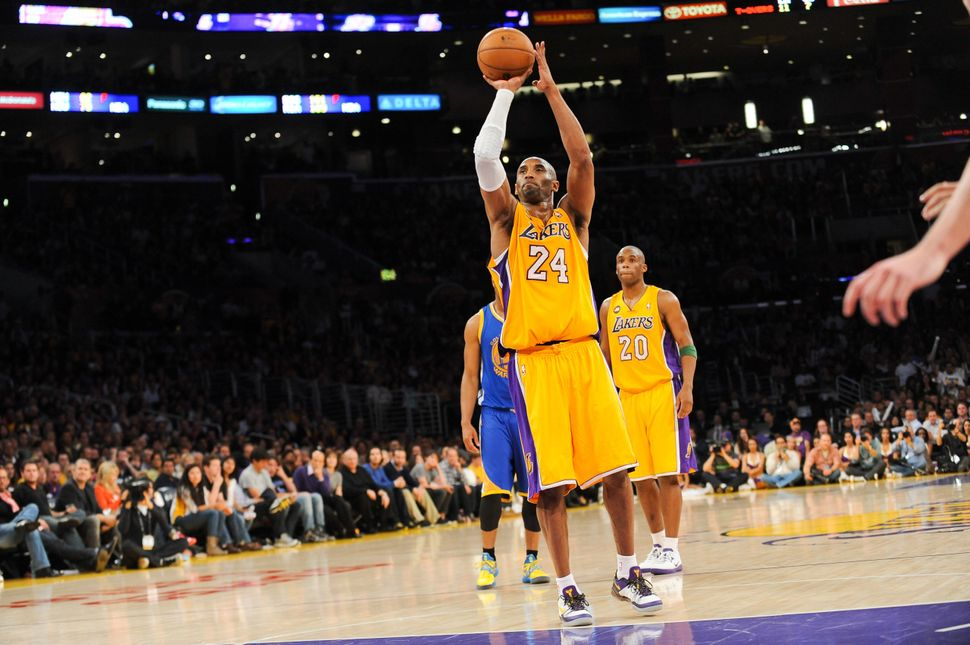
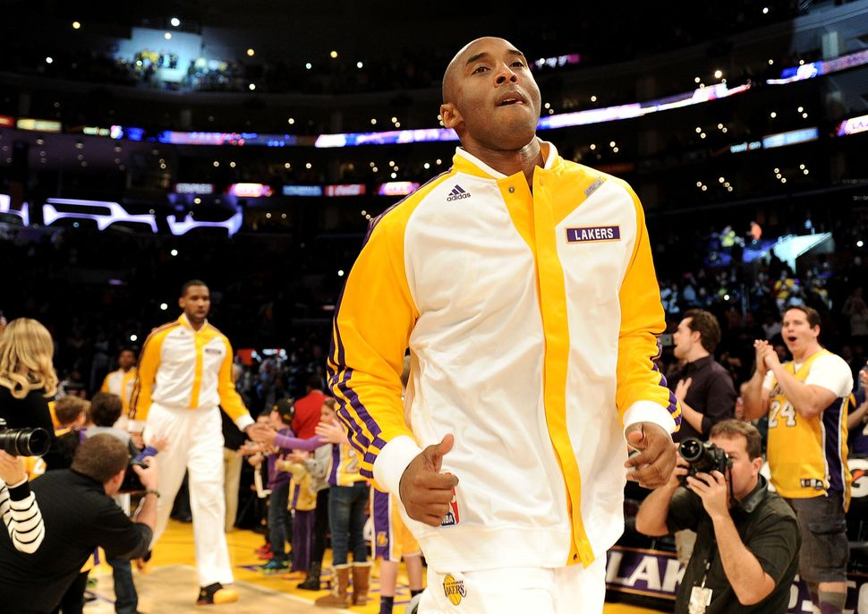
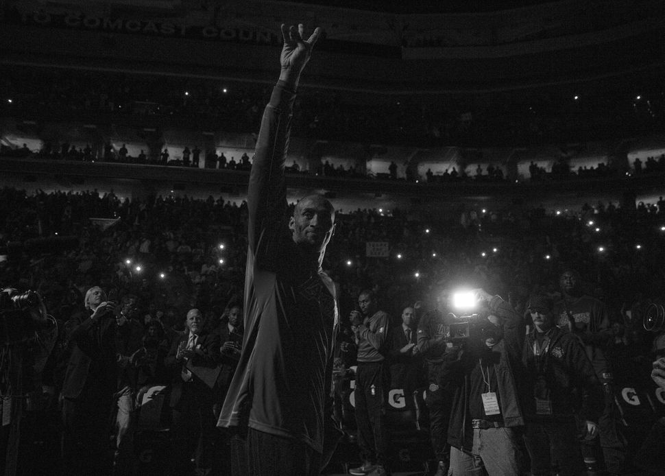
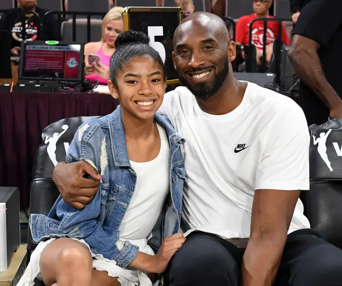

Kobe's Greatest Moments
Bryant eyes the basket during the NBA Slam Dunk Contest at All-Star Weekend on Feb. 8, 1997. On that day, at age 18, Bryant became the youngest player ever to win the contest.
Bryant dunks over seven-foot-six-inch Yao Ming of the Houston Rockets on Feb. 18, 2003.
Bryant shoots a free throw for his 81st point against the Toronto Raptors on Jan. 22, 2006. His 81-point scoring total that night was the second highest in NBA history.
Bryant celebrates the Lakers winning the 2008-2009 NBA championship, on June 14, 2009, in Orlando, Florida. Bryant won Finals MVP honors, as the Lakers easily defeated the Magic in a five-game series.
Moments after tearing his Achilles on April 12, 2013, Bryant somehow manages to sink two free throws before leaving the game. Less than 24 hours later, Bryant had season-ending surgery.
On Dec. 8, 2013, Bryant steps onto the court for his first game since tearing his Achilles the previous spring. Unsurprisingly, he received a huge ovation from the Staples Center crowd all throughout that night’s contest against the Toronto Raptors.
Bryant waves to the Philadelphia crowd, acknowledging their loud ovation, prior to the Lakers’ contest against the 76ers on Dec 1, 2015. Philadelphia held a pre-game ceremony for Bryant, honoring his 20-year NBA career.
Kobe and his daughter Gianna courtside at the 2019 WNBA All-star Game.